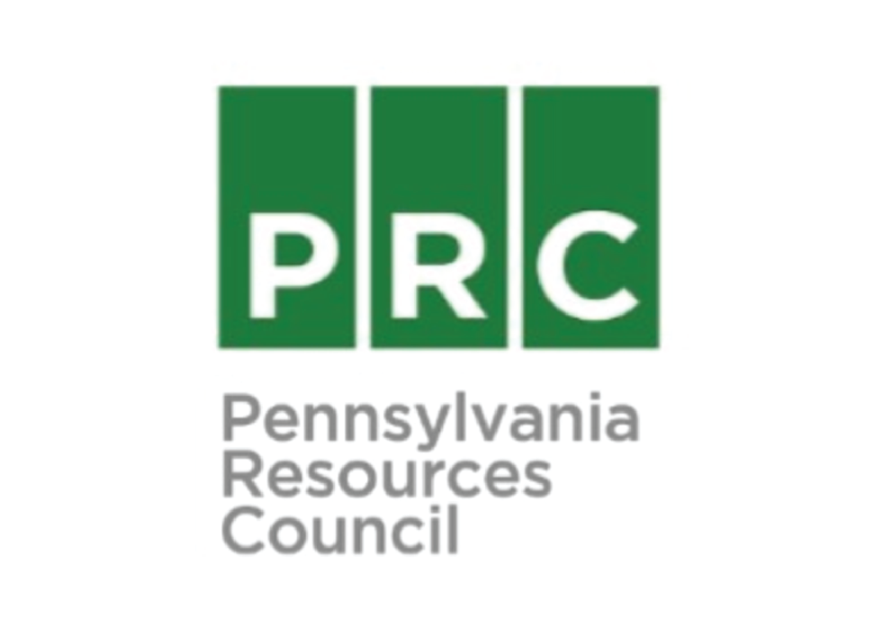

Pennsylvania Resources Council
Team
- Nikita Bokil
- Ann Chen
- Connor Moore
Opportunity
PRC hosts numerous collection events over the summer for household chemicals, e-waste, pharmaceuticals, and other hard to recycle items. Each collection event takes place in a parking lot, with approximately 1,000 cars coming in and out in 4 hours. During this time, people wait almost an hour in line until their materials are collected from the trunk by volunteers and they are sent on their way. PRC has been unable to effectively collect information on any of the recyclers, aka their “customers”, and is looking for a data collection and analysis tool. This information is important to the organization for two main reasons: data-driven decision making and customer outreach. With the proper visualizations, PRC can present solid data to municipalities and sponsors in order to increase their funding and support environmental initiatives. Additionally, PRC has had difficulty engaging current members and attracting new ones, and would benefit from a tool that would increase their membership value proposition.
Outcomes
Our project timeline involved evaluating various survey and data analysis tools, user testing the tools at PRC events, deploying the survey at PRC’s first collection event, and developing the events platform. We ensured the solutions would be sustainable by training the community partners and providing thorough documentation. We also involved PRC’s technology consultant, FiremanCreative, to discuss the events platform and integrate it with PRC’s website. Our efforts helped us achieve the goal of providing value to PRC by asking questions and guiding their decisions surrounding technology.
Deliverables
Our final deliverables to PRC include the following: 1. SurveyGizmo subscription, training, documentation, and integration into PRC business processes 2. BatchGeo training and documentation for map visualizations 3. Events platform to be integrated into PRC website and display upcoming events